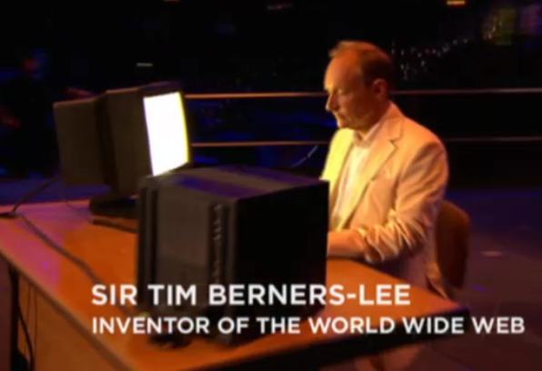

1989年12月，蒂姆为他的发明正式定名为World Wide Web，即我们熟悉的WWW；1991年5月WWW在Internet上首次露面，立即引起轰动，获得了极大的成功被广泛推广应用。
Web通过一种超文本方式，把网络上不同计算机内的信息有机地结合在一起，并且可以通过超文本传输协议（HTTP）从一台Web服务器转到另一台Web服务器上检索信息。Web服务器能发布图文并茂的信息，甚至在软件支持的情况下还可以发布音频和视频信息。此外，Internet的许多其它功能，如E-mail、Telnet、FTP、WAIS等都有可通过Web实现。